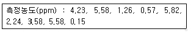
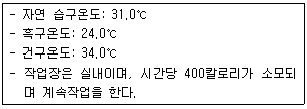
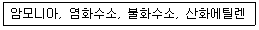

산업위생관리기사 (2006-03-05 기출문제)
1과목: 산업위생학개론
1. 미국의 산업위생관련 전문조직(행정조직)중 '미국산업위생학회'의 약자로 맞는 것은?
- NIOSH
- OSHA
- ACGIH
- AIHA
(정답률: 40%)

2. 의학의 사회성을 강조하는 속에서 노동자의 건강보호를 주장한 근대 별리학의 기초를 확립한 사람은?
- Rudolf Virchow
- Galen
- Pettenkoffer
- Ramazzini
(정답률: 34%)
3. 어떤 공장에서 1000명의 근로자가 1년동안 작업하던 중 재해가 40건 발생하였다면 이 때 도수율은? (단, 1일 8시간, 연간 평균 근로일수 300일)
- 12.3
- 16.7
- 24.4
- 28.4
(정답률: 알수없음)
4. 산업재해를 일으킬 수 있는 사람을 재해빈발자라 한다. 주의력이 산만하고 주의력 지속 불늘, 흥분성, 비협조성이 있는 재해 빈발자는 어느 분류에 속하는가?
- 미숙성 빈발자
- 상황성 빈발자
- 소질적 빈발자
- 반복성 빈발자
(정답률: 알수없음)
5. 우리나라 산업위생의 역사로 틀린 것은?
- 1953년 - 근로기준법 제정
- 1981년 - 산업안전보건법 공포
- 1986년 - 유해물질의 허용농도 제정
- 1988년 - 한국산업위생학회 창립
(정답률: 16%)
6. 노출기준에 피부(skin)표시를 하여야 하는 물질에 대한 설명으로 틀린 것은?
- 손이나 팔에 의한 흡수가 몸 전체 흡수에 지대한 영향을 주는 물질
- 옥탄올-물 분배계수가 낮아 피부흡수가 용이한 물질
- 반복하여 피부에 도포했을 때 전신작용을 일으키는 물질
- 급성 동물실험결과 피부흠수에 의한 치사량이 비교적 낮은 물질(예:즉 1000㎎/체중㎏ 이하 일때)
(정답률: 알수없음)
7. 1989-90년대 우리나라에 대표적으로 집단 직업병을 유발 시켰던 이 물질은 비스코스레이온 합성에 사용되며 급성으로 고농도 노출시 사망할 수 있고 1,000ppm 수준에서는 환상을 보는 정신이상을 유발한다. 만성독성으로 뇌경색증, 다발성신경염, 협심증, 신부전증 등을 유발하는 물질은?
- 이환화탄소
- 2-브로모프로판
- 카드뮴
- 벤젠
(정답률: 알수없음)
8. 작업대사율(RMR)의 설병 중 가장 알맞은 것은?
- 경작업은 작업 대사율이 1-2이며 지적(知的)작업이 대부분이고 실동율은 80% 이하이다.
- 중등도 작업은 작업 대사율이 2-4이다.
- 중(重)작업의 실동율은 67-50% 범위이다.
- 격심작업의 실동율은 30% 이하이며 1일소비열량은 남자일 경우 2500㎉ 이상이다.
(정답률: 알수없음)
9. 근골격계질환자의 사후관리 방법으로 적절하지 않는 것은?
- 작업적응을 위한 훈련
- 작업내용의 개선
- 작업시간과 휴식시간의 조정
- 작업전환
(정답률: 알수없음)
10. 근육노동을 하는 사람에게 호기적 산화를 통하여 근육의 열량공급을 원활하게 도와주도록 특히 주의해서 공급해야 하는 비타민의 종류는?
- 비타민 A1
- 비타민 B1
- 비타민 C1
- 비타민 D1
(정답률: 알수없음)
11. 산업재해지표중 '천인율'이 가장 높은 업종은?
- 제조업
- 건설업
- 운수업
- 광업
(정답률: 14%)
12. 작업중 체열생산이 가장 많은 부분은?
- 골격근
- 폐장
- 간장
- 심장
(정답률: 알수없음)
13. 고온에 순응된 사람들이 고온에 계속 노출되었을 때 나타나는 현상은?
- 심장박동 증가
- 땀의 분비 속도 증가
- 직장온도 증가
- 피부온도 증가
(정답률: 알수없음)
14. 작업적성검사 가운데 생리적 기능검사의 항목에 해당하지 않는 것은?
- 지각동작검사
- 감각기능 검사
- 심폐기능검사
- 체력검사
(정답률: 알수없음)
15. 육체적 작업능력에 영향을 미치는 요소와 내용을 잘못 연결한 것은?
- 정신적 요소 - 태도
- 육체적 조건 - 연령
- 환경 요소 - 고도
- 작업 특징 - 동기
(정답률: 65%)
16. 일반적으로 오차는 계통오차와 우발오차로 구분된다. 계통오차에 관한 애용으로 틀린 것은?
- 측정기 또는 분석기기의 미비로 기인되는 오차이다.
- 오차가 작을 때는 정밀하다고 한다.
- 크기와 부호를 추정할 수 있고 보정할 수 있다.
- 종류는 외계오차, 기계오차, 개인오차가 있다.
(정답률: 50%)
17. 다음은 서울종로 혜화동 전철역에서 측정한 오존의 농도이다. 기하평균(ppm)은?

- 약 2.07
- 약 2.21
- 약 2.52
- 약 2.74
(정답률: 알수없음)
18. 산업재해로 인하여 부상자 1인당 직접비용으로 300만원이 지출되었다면 총 재해손실비는?
- 600만원
- 900만원
- 1,200만원
- 1,500만원
(정답률: 10%)
19. 미국 NIOSH에서 정한 중량을 들기작업지수(Lifting index, LI)를 결정하는 식으로 적절한 것은?
- 물체물게[㎏]/AL[㎏]
- 물체무게[㎏]/MPL[㎏]
- 물체무게[㎏]/RWM[㎏]
- 물체무게[㎏]/FMAX[㎏]
(정답률: 알수없음)
20. 인체계측자료(Anthropometric data)를 표현하는 방법으로 자주 쓰이는 것은?
- 퍼센트(percent)
- 표준편차(standard deviation)
- 비율(ratio)
- 퍼센타일(percentile)
(정답률: 알수없음)
2과목: 작업위생측정 및 평가
21. 근로자가 일정시간동안 일정농도의 유해물질에 노출되고 있을 때 체내에 습수되는 유해물질의 양은 다음 식에 의해서 계산된다. [ 체내흡수량(㎎) = ( ) × 노출시간 × 폐환기율 × 체내 잔류율 ] 다음 중 ( )에 들어갈 내용으로 적합한 것은?
- 공기중 유해물질 농도
- 체내 흡수농도
- 체내 허용농도
- 공기중 노출기준 농도
(정답률: 알수없음)
22. 산업보건분야에서 스토크의 법칙에 따른 침강속도를 구하는 식을 대신하여 간편하게 계산하는 식으로 적절한 것은? (단, V: 종단속도(㎝/sec), SG: 입자의 비중, d: 입자의 직경(㎛), 입자크리는 1 - 50㎛)
- v = 0.001× SG× d2
- v = 0.003× SG× d2
- v = 0.0⑤× SG× d2
- v = 0.009× SG× d2
(정답률: 알수없음)
23. 작업장의 음압수준이 95㏈(A) 이고, 근로자의 귀마개의 차음평가수(NRR=23)를 착용하고 있다. 차음효과로 근로자가 실제 노출되는 음압수준은?
- 82 ㏈(A)
- 85 ㏈(A)
- 87 ㏈(A)
- 92 ㏈(A)
(정답률: 75%)
24. 다음 조건에서의 주조공장의 WBGT는?

- WBGT: 28.9℃
- WBGT: 29.9℃
- WBGT: 30.9℃
- WBGT: 31.9℃
(정답률: 알수없음)
25. 먼지 채취시 사이클론이 충돌기에 비해 갖는 장점이라 볼 수 없는 것은?
- 사용이 간편하고 경제적이다.
- 호흡성 먼지에 대한 자료를 쉽게 얻을 수 있다.
- 입자의 질량 크기 분표를 얻을 수 있다.
- 매체의 코팅과 같은 별도의 특별한 처리가 필요없다.
(정답률: 62%)
26. 작업환경측정, 분석치에 대한 정확도와 정밀도를 확보하기 위하여 통계적 처리를 총한 일정한 신뢰한계 내에서 측정, 분석능력 향상을 위하여 행하는 모든 관리적 수단을 말하는 것은?
- 분석관리
- 평가관리
- 측정관리
- 졍도관리
(정답률: 93%)
27. MCE여과지에 금속농도 수준별로 일정량을 첨가한(spiked) 후 분석하여 검출된(detected) 양의 비(%)를 구하는 실험은 무엇을 알기 위한 것인가?
- 회수율
- 분해율
- 표준률
- 분리효율
(정답률: 54%)
28. 소음 단위인 데시벨(㏈)을 계산하기 위한 최소음압실 효치가 P0=0.00002 N/m2 이며, 측정한 음압이 60 N/m2 라면 이 음압수준은?
- 80 ㏈
- 90 ㏈
- 110 ㏈
- 130 ㏈
(정답률: 47%)
29. 흡광광도기분석의 작동원리는 특정파장의 빛이 특정한 자유원자층을 통과하면서 선택적인 흡수가 일어나는 것을 이용하는 것이며 이 관계는 Beer-Lambert 법칙을 따른다. 빛의 강도가 I0인 단색광이 어떤 시료용액을 통과할 때 그 빛의 50%가 흡수된 경우 흡광도는?
- 0.3
- 0.5
- 0.7
- 0.8
(정답률: 알수없음)
30. 공장 내 지면에 설치된 한 기계에서 5m 떨어진 지점에서 소음이 70㏈(A)이었다. 기계의 소음이 50㏈(A)로 들리는 지점은 기계에서 몇m 떨어진 곳인가?
- 150m
- 100m
- 50m
- 20m
(정답률: 알수없음)
31. '알고 있는 공기중 농도'를 만드는 방법중 Dynamic Method의 장점이 아닌 것은?
- 온습도 조절이 가능하다.
- 소량의 누출이나 벽면에 의한 손실은 무시한다.
- 대개 운전용으로 제작하기가 용이하다.
- 다양한 농도범위에서 제조 가능하다.
(정답률: 64%)
32. 유도결합플라스마-원자발광분석기에 관한 내용과 가장 거리가 먼 것은?
- 분광학적 방해영향이 없다.
- 여러 금속을 동시에 분석할 수 있다.
- 검량선의 직선성 범위가 넓다.
- 분석의 정밀도가 높다.
(정답률: 알수없음)
33. 글라인딩 작업시 발생되는 먼지를 개인 시료 포집기를 사용하여 유리섬유여과지로 포집하였다. 이때의 유속은 1.5ℓ/min, 여과지 무게는 0.436㎎ 이다. 4시간의 포집하는 동안 유속은 1.3ℓ/min 로 떨어졌으며 여과지의 무게는 0.948㎎ 이었다. 먼지의 농도는 몇 ㎎/m3 인가?
- 약 1.5
- 약 2.3
- 약 3.1
- 약 4.3
(정답률: 50%)
34. 작업환경 측정결과 측정치가 5,10,15,15,10,5,7,6,9,6의 10개였다. 이 측정치로 부터의 표준편차는? (단, 단위는 ppm이며 시료수는 N으로 한다.)
- 약 1.13
- 약 1.87
- 약 2.13
- 약 3.57
(정답률: 40%)
35. 다음 중 1차 표준기구로만 연결된 것은?
- 로타미터, Pitot 튜브, 폐활량계
- 비누거품미터, Pitot 튜브, 폐활량계
- 로타미터, 비누거품미터, 폐활량계
- 비누거품미터, 폐활량계, 오리피스메터
(정답률: 알수없음)
36. Hexane의 부부압은 124㎜Hg(OEL 500ppm)이라면 VHR은?
- 271
- 284
- 315
- 326
(정답률: 알수없음)
37. 다음 중 입자농도의 측정방법으로 알맞지 않는 것은?
- 석면의 농도는 여과채취방법에 의한 계수 방법으로 측정한다.
- 광물성 분진은 여과채취방법에 의하여 석영, 크리스토바라이트, 트리디마이트를 분석할 수 있는 적합한 분석방법으로 측정한다.
- 용접흄은 여과채취방법으로 하되 용접보안면을 착용한 경우에는 그 내부에서 채취하고 중량분석방법과 원자흡광분광기 또는 유도결합플라스마를 이용한 분석방법으로 측정한다.
- 규산염은 분립장치 또는 입자의 크기를 파악할 수 있는 기기를 이용한 여과채취방법으로 측정한다.
(정답률: 알수없음)
38. 아스만 통풍건습계(0.5도 간격의 눈금)로 습도를 측정할 때 측정시간 기준은?
- 5분 이상
- 15분 이상
- 25분 이상
- 35분 이상
(정답률: 알수없음)
39. 미국 ACGIH에 의하면 호흡성먼지는 가스교환부위, 즉 폐포에 침착할 때 유해한 물질이다. 평균입경을 얼마로 정하고 있는가?
- 2.0㎛
- 2.5㎛
- 4.0㎛
- 5.0㎛
(정답률: 86%)
40. 입자상 물질을 채취하기 위해 사용되는 여과지중 습기에 가장 영향을 적게 받으며 전기적인 전하를 가지고 있어 채취시 입자를 반발하여 채취효율을 떨어뜨리는 단점이 있는 것으로 채취전에 이 필터를 세제용액으로 처리함으로서 이러한 오차를 줄일 수 있는 것은?
- PVC membrane Filter
- MCE membrane Filter
- 유리섬유필터
- PTFF membrane Filter
(정답률: 47%)
3과목: 작업환경관리대책
41. 송풍기의 동작점에 관한 설명으로 가장 알맞은 것은?
- 송풍기의 성능곡선과 시스템 동력곡선이 만나는 점
- 송풍기의 성능곡선과 시스템 요구곡선이 만나는 점
- 송풍기의 정압곡선과 시스템 효율곡선이 만나는 점
- 송풍기의 정압곡선과 시스템 동압곡선이 만나는 점
(정답률: 알수없음)
42. 톨루엔(혀용농도 100ppm)이 40%(부피비)함유된 접착제를 시간당 3리터를 사용하는 작업장에서 희석식 환기장치를 사용할 경우 필요환기량(m3/min)은? (단, 톨루엔의 비중량은 0.87, 부나량 92, 안전계수 k는 6으로 가정한다.)
- 약 273
- 약794
- 약 1420
- 약 1640
(정답률: 27%)
43. 전체환기시설을 설치하기 위한 기본원칙으로 가장 거리가 먼 것은?
- 오염물질 사용량을 조사하여 필요 환기량을 계산한다.
- 오염물질 배출구는 가능한 한 오염원으로부터 가까운 공에 설치하여 '점환기'의 효과를 얻는다.
- 공기배출구와 근로자의 작업위치 사이에 오염원이 위치해야 한다.
- 오염원 주위에 다른 작업공정이 있으면 공기 공급량을 배출량보다 크게하여 양압을 형성시킨다.
(정답률: 54%)
44. 국소 환기시스템에서 덕트의 마찰손실을 설명한 것 중 바르지 못한 것은?
- 마찰손실은 덕트 직경에 반비례한다.
- 마찰손실의 계산은 등거리방법 또는 속도압방법을 적용한다.
- 마찰손실은 속도압에 반비례한다.
- 마찰손실은 덕트 길이에 비례한다.
(정답률: 알수없음)
45. 적용화학물질이 밀랍, 탈수라노린, 파라핀, 유동파라핀, 탄산 마그네슘이며 적용용도로는 광산류, 유기산, 염류 및 무기염류 취급작업인 보호크림의 종류로 가장 알맞은 것은?
- 친수성크림
- 차광크림
- 소수성크림
- 피막형 크림
(정답률: 30%)
46. 레시버식 카누피형 후드에서 난기류가 있고 열상승 기류량이 12.5m3/min 였다면 난기류가 발생하였을때의 필요 송풍량(m3/min)은? (단, 누출안전계수 m = 10, 누입한계 유량비 KL = 1.2)
- 163
- 216
- 325
- 412
(정답률: 알수없음)
47. 25℃에서 공기의 점성계수 μ=1.607× 10-4poise, 밀도 p=1.203㎏/m3이다. 이때 동점성 계수는?
- -1.336× 10-5m2/sec
- 1.736× 10-5m2/sec
- -1.336× 10-6m2/sec
- 1.736× 10-6m2/sec
(정답률: 알수없음)
48. 다음은 청력보호구의 차음효과를 높이기 위해 유의해야할 사항이다. 다음중 적합하지 않은 것은?
- 청력보호구는 기공(氣孔)이 큰 재료로 만들어 흡음효율을 높이도록 한다.
- 청력보호구는 머리모양이나 귓구멍에 잘 맞는 것을 사용하여 불쾌감을 주지 않도록 해야 한다.
- 청력보호구를 잘 공정시켜 보호구 자체의 진동을 최소한도로 줄이도록 한다.
- 귀덮개 형식의 보호구는 머리가 길 때와 안경테가 굵어 잘 부착되지 않을 때는 사용하지 않도록 한다.
(정답률: 알수없음)
49. 다음의 보호장구의 재질 중 극성용제에 효과적인 것은? (단, 극성용제에는 알코올, 물, 케톤류등을 포함한다)
- Neoprene 고무
- Nitrile 고무
- viton
- Butyl 고무
(정답률: 알수없음)
50. 작업환경관리를 위해 대책을 수립할 때 경제성을 비교하는 방법중 현가분석방법에 관한 설명으로 틀린 것은?
- 미래에 발생할 모든 비용과 절감액을 복리 이자율을 적용해 현재의 가치로 환산하여 합산한 후 비교한다.
- 인플레이션은 고려하지 않는다.
- 적용하는 이자율은 기업이 자금을 빌릴 때 또는 기업이 투자할 때 정한 수익률 등을 고려해 정한다.
- 고려되는 대안간에 발생하는 비용과 절감 비용등이 해마다 달라지는 경우에는 적용이 곤란하다.
(정답률: 알수없음)
51. 작업환경개선을 위한 물질의 대치로 알맞지 않는 것은?
- 성냥을 만들 때 백린을 적린으로 교체
- 금속표면을 블라스팅할 때 사용재료로서 모래대신 철구슬을 사용
- 주물공정에서 실리카모래 대신 그린 모래로 주형을 채우도록 대치
- 세척작업시 트리클로로에틸렌을 사염화탄소로 대치
(정답률: 알수없음)
52. 장기간 사용하지 않았던 오래된 우물 속으로 작업을 위하여 들어갈 때 가장 안전한 마스크는?
- 호스마스크
- 유기가스용 방독마스크
- 특급의 방진마스크
- 일산화탄소용 방독마스크
(정답률: 알수없음)
53. 어떤 송풍기가 송풍기 유효전압 100㎜H2O 이고 풍량은 16m3/min 의 성능을 발휘한다. 전압효율이 80%일 때 축동력은?
- 약 0.13 ㎾
- 약 0.26 ㎾
- 약 0.33 ㎾
- 약 0.57 ㎾
(정답률: 알수없음)
54. 일정장소에 설치되어 있는 콤프레셔나 압축공기실린더에서 호흡할 수 있는 공기를 보호구 안면부에 연결된 관을 통하여 공급하는 호흡용 보호기 중 폐력식에 관한 내용으로 가장 거리가 먼 것은?
- 누설가능성이 없다.
- 보호구안에 음압이 생긴다.
- demand식 이라고도 한다.
- 레귤레이터를 착용자가 호흡할 때 발생하는 압력에 따라 공기가 공급된다.
(정답률: 42%)
55. 유입계수 Ce=0.78인 플랜지 부착 원형 후드가 있다. 덕트의 원면적이 0.0314m2이고 필요환기량 Q는 30m3/min이라고 할 때 후드정압 SPh는? (단, 공기밀도 1.2㎏/m3 기준)
- 약 26㎜H2O
- 약 29㎜H2O
- 약 36㎜H2O
- 약 39㎜H2O
(정답률: 알수없음)
56. 0℃ 1기압인 표준상태에서 공기의 밀도가 1.293㎏/sm3라고 할 때 25℃ 1기압에서의 공기밀도(㎏/m3)는?
- 1.21
- 1.18
- 1.13
- 1.07
(정답률: 50%)
57. 덕트 직경이 30㎝이고, 공기 유속이 10㎧일 때 Reynold 수는? (단, 공기 점성계수는 1.8× 10-5㎏/sec.m이고, 공기밀도는 1.2㎏/m3 이다.)
- 100,000
- 200,000
- 300,000
- 400,000
(정답률: 알수없음)
58. 작업환경에서 환기시스템의 관경이 400㎜인 직관을 통하여 풍량 95m3/min의 표준공기를 송풍할 때 관내 평균 풍속은?
- 12.6 ㎧
- 14.6 ㎧
- 16.6 ㎧
- 18.6 ㎧
(정답률: 알수없음)
59. 덕트합류시 균형유지방법 중 댐퍼를 이용한 균형유지법에 관한 설명과 가장 거리가 먼 것은?
- 시설설치 후 변경에 유연하게 대처가능
- 최대 저항경로 선정이 잘못되어도 설계시 쉽게 발견할 수 있음
- 최소유량으로 균형유지 가능
- 시설 설치시 공장 내 방해물에 따른 약간의 설계 변경이 용이함
(정답률: 알수없음)
60. 국소환기장치 설계에서 제어풍속에 대한 설명으로 가장 알맞은 것은?
- 제어풍속이란 작업장내의 평균유속을 말한다.
- 발산되는 유해물질을 후드로 완전히 흡인하는데 필요한 기류속도이다.
- 덕트내의 기류속도를 말한다.
- 일명 반송속도라고도 한다.
(정답률: 알수없음)
4과목: 물리적유해인자관리
61. 체내 열생산을 주로 담당하고 있는 기관을 가장 알맞게 짝지은 것은?
- 골격근, 심장
- 골격근, 조혈기관
- 골격근, 대뇌
- 골격근, 간장
(정답률: 알수없음)
62. 장시간의 한랭폭로와 체열상실에 의하여 발생하는 급성 중증 건강장해는?
- 전신체온강하
- 참호족
- 침수족
- 급성혈관축소
(정답률: 50%)
63. 채광계획으로 적절치 못한 것은?
- 실내각점의 개각은 4°~5°, 입사각은 28° 이상이 좋다.
- 창의 면적은 전체 벽면적의 15~20%가 이상적이다.
- 많은 채광을 요구하는 경우는 남향이 좋다.
- 균일한 조명을 요구하는 작업실은 북향이 좋다.
(정답률: 67%)
64. 고압환경의 2차적인 가압현상(화학적 장해)에 관한 설명으로 틀린 것은?
- 이산화탄소 농도가 높아지면 상대적으로 산소독성, 질소마취작용 발생이 억제된다.
- 산소중독증상은 고압산소에 대한 폭로가 중지되면 즉시 멈춘다.
- 산소의 분압이 2기압이 넘으면 산소중독증세가 나타난다.
- 공기 중의 질소가스는 4기압 이상에서 마취작용을 나타내 다행증이 일어난다.
(정답률: 알수없음)
65. 투과력은 미약하나 전리작용은 가장 강한 절리 방사선은?
- α
- β
- γ
- Χ
(정답률: 알수없음)
66. 전리방사선에 관한 설명 중 맞지 않는 것은?
- Χ선의 에너지는 파장에 역비례하여 에너지가 클수록 파장은 짧아진다.
- α-입자는 핵에서 방축되는 입자로서 헬리움원자의 핵과 같이 두 개의 양자와 두 개의 중성자로 구성되어 있다.
- β-입자는 핵에서 방출되면 양전하로 하전되어 있다.
- 중성자는 하전되어 있지 않으며 수소동위원소를 제외한 모든 원자핵에 존재한다.
(정답률: 31%)
67. 중심주파수가 8000㎐인 경우, 하한주파수와 상한주파수로 가장 적절한 것은? (단, 1/1 옥타브 밴드 기준)
- 5150㎐, 10300㎐
- 5220㎐, 1⑤00㎐
- 5420㎐, 11000㎐
- 5650㎐, 11300㎐
(정답률: 알수없음)
68. 음압실효치가 0.2N/m2일 때 음압도(SPL: Sound Pressure Level)는 얼마인가? (단, 기준음압은 2×10-5N/m2로 계산한다.)
- 100㏈
- 80㏈
- 60㏈
- 40㏈
(정답률: 82%)
69. 전자기파로서의 전자기 방사선은 파동의 형태로 매개체 없이도 진공상태에서 공간을 통하여 전파된다. 파장으로서 방사서의 특성으로 틀린 것은?
- 간섭을 일으킨다.
- 자장이나 전장에 영향을 받는다.
- 빛의 속도로 이동한다.
- Filtering형태로 극성화 될 수 있다.
(정답률: 알수없음)
70. 안구가 진동에 공명하는 주파수의 범위로 가장 알맞은 것은? (단, 전신진동 기준)
- 5 - 10㎐
- 20 - 30㎐
- 60 - 90㎐
- 100 - 150㎐
(정답률: 알수없음)
71. 다음의 전자기파의 측정에 사용되는 단위중 자계강도에 적용되는 것이 아닌 것은?
- A/m
- V/m
- μT(micro Tesla)
- G(Gause)
(정답률: 알수없음)
72. 밝기의 단위 룩스(LUX)에 관한 정의로 가장 알맞은 것 은?
- 지름이 1인치되는 촛불이 수평방향으로 비칠 때의 빛의 광도를 나타내는 단위이다.
- 1촉광의 광원으로부터 한단위 입체각으로 나가는 빛의 밝기 단위이다.
- 1루멘의 빛이 1ft2의 평면상에 수직방향으로 비칠 때 그 평면의 빛의 양을 말한다.
- 1m2의 평면에 1루멘의 빛이 비칠 때의 밝기를 말한다.
(정답률: 알수없음)
73. '적외선'에 관한 설명과 가장 거리가 먼 것은?
- 조직에 흡수된 적외선은 화학반응을 일으키는 것이 아니라 구성분자의 운동에너지를 증대시킨다.
- 만성폭로에 따라 눈장해인 백내장을 일으킨다.
- 단파장(700nm이하) 적외선은 눈의 각막을 손상시킨다.
- 적외선이 체외에서 조사되면 일부는 피부에서 반사되고 나머지만 흡수된다.
(정답률: 28%)
74. 산소농도가 6%이하인 공기중의 산소분압은?
- 75mmHg 이하
- 65mmHg 이하
- 55mmHg 이하
- 45mmHg 이하
(정답률: 알수없음)
75. 고열장해에 관한 설명으로 틀린 것은?
- 열발진은 작업환경에서 가장 흔히 발생하는 피부장해이다.
- 열허탈(열실신)은 고열작업장에 순화되지 못한 근로자가 고열작업을 수행할 때 체온조절기능이 원활치 못해 결국 뇌의 산소부족으로 의식을 잃게 된다.
- 열경련은 휴식과 식염정제의 공급에 따른 염분보충으로 개선될 수 있다.
- 열사병의 일차적인 증상은 정신착란, 의식결여, 경련혼수, 건조하고 높은 피부온도, 체온상승등이다.
(정답률: 알수없음)
76. 1000㎐에서 40㏈의 음압레벨을 갖는 순음의 크기를 1로 하는 소음의 단위는?
- NRN
- ㏈
- Phon
- Sone
(정답률: 알수없음)
77. 전리방사선과 비전리방사선의 경계가 되는 에너지 강도로 가장 적절한 것은?
- 1200eV
- 120eV
- 12eV
- 1.2eV
(정답률: 90%)
78. 방사선량중 노출선량에 관한 설명으로 가장 알맞은 것은?
- 조짐의 단위 질량당 노출되어 흡수된 에너지량
- 방사선의 형태 및 에너지 수준에 따라 방사선 가중치를 부여한 선량
- 공기 1㎏당 1쿨롱의 전하량을 갖는 이온을 생성하는 Χ선 또는 감마선량
- 인체의 여러조직으로의 영향을 합계하여 노출지수로 평가하기 위한 선량
(정답률: 알수없음)
79. 한냉환경에서의 열평형 방정식은 어느 것인가? (단, ΔS:생채 열용량의 변화, M:체내 열생산량, E:증발에 의한 열방산, R:복사에 의한 열의 득실, C: 대류에 의한 열의 득실)
- ΔS = M-E-R-C
- ΔS = M-E+R-C
- ΔS = M+E-R-C
- ΔS = M+E+R+C
(정답률: 알수없음)
80. 소음발생원이 고체음인 경우의 대책으로 가장 거리가 먼것은?
- 밸브의 다단화
- 방사면 축소
- 공명방지
- 가진력 억제
(정답률: 알수없음)
5과목: 산업독성학
81. 폐조직이 정상이면서 간질반응도 경미하고 망상섬유를 나타내는 진폐증을 무엇이라 하는가?
- 비가역성 진폐증
- 비교원성 진폐증
- 비활동성 진폐증
- 비폐포성 진폐증
(정답률: 알수없음)
82. 국제암연구위원회(IARC)의 발암물질 구분중 Group 2B에 관한 설명으로 틀린 것은?
- 인체 발암성 가능 물질을 말한다.
- 실험동물에 대한 발암성 근거가 제한적이거나 부적당하고 사람에 대한 근거 역시 부적당함
- 사람에 있어서 원인적 연관성 연구결과들이 상호일치 되지 못하고 아울러 통계적 유의성도 약함
- 실험동물에 대한 발암성 근거가 충분하지 못하며 사람에 대한 근거 역시 제한적임
(정답률: 알수없음)
83. [모든 화학물질은 독물이며 독물이 아닌 화학물질은 없다. 적절한 양을 기준으로 독물이냐 치료약이냐가 구별될 수 있다. 즉 적절한 양으로 사용하면 치료약 이지만 그러하지 아니하면 독물이다.] 라고 한 의학자는?
- Paracelsus
- Alice Hamilton
- Ellenog
- Bernardino
(정답률: 알수없음)
84. 다음은 최기형성에 대한 설명이다. 가장 거리가 먼 것은?
- 노출되는 화학물질의 얄이 중요하다.
- 노출시기와 상관없이 정량적인 영향이 나타나는 것이 특징이다.
- 노출되는 사람의 감수성도 관련이 있다.
- 독성이 나타나지 않는 낮은 양에서도 기형이 발생될 수 있다.
(정답률: 알수없음)
85. 다음은 생물학적 폭로지표에 대한 설명이다. 옳지 않은 것은?
- 폭로근로자의 호기, 요, 혈액, 기타 생체시료로 분석하게 된다.
- 직업성질환의 진단이나 중독 정도를 평가하게 된다.
- 유해물의 전반적인 폭로량을 추정할 수 있다.
- 현 환경이 잠재적으로 갖고 있는 건강장해 위험을 결정하는 데에 지침으로 이용된다.
(정답률: 50%)
86. 화학물질의 상호작용인 길항작용중 물질의 흡수, 대사등에 영향을 미쳐 표적기관내 축적기간 혹은 농도가 저하되는 경우는?
- 화학적 길항작용
- 분배적 길항작용
- 수용체 길항작용
- 기능적 길항작용
(정답률: 67%)
87. 납중독을 확인하는데 이용하는 시험으로 틀린 것은?
- 혈중의 납
- 헴(heme)의 대사
- 신경전달속도
- EDTA 흡착능
(정답률: 82%)
88. 화학물질에 의한 암발생 이론 중 다단계 이론에서 언급되는 단계와 가장 거리가 먼 것은?
- 개시 단계
- 병리 단계
- 진행 단계
- 촉진 단계
(정답률: 64%)
89. 유해화학물질에 의한 간의 중요한 장해인 중심소엽성괴사를 일으키는 물질 중 대표적인 것은?
- 에킬렌글리콜
- 사염화탄소
- 이황화탄소
- 수은
(정답률: 알수없음)
90. 다음의 유기용제와 그 특이증상을 짝지은 것 중 알맞지 않는 것은?
- 벤젠-조혈장애
- 염화탄화수소-시신경장애
- 이황화탄소-중추신경 및 말초신경장애
- 메틸부틸케톤-말초신경장애
(정답률: 알수없음)
91. 염료, 합성고무경화제의 제조에 사용되며 급성중독으로는 피부염, 급성방광염을 유발하며, 만성중독으로는 방광, 뇨로계 종양을 유발하는 유해물질은?
- 벤지딘
- 이황화탄소
- 이염화메틸렌
- 노말헥산
(정답률: 67%)
92. 중금속 중에서 칼슘대사에 장애를 주어 신결석을 동반한 신증후군이 나타나고 다량의 칼슘배설이 일어나 뼈의 통증, 골연화증 및 골수공증과 같은 골격계 장해를 유발하는 것으로 가장 알맞은 것은?
- 망간(Mn)
- 카드뮴(Cd)
- 비소(As)
- 수은(Hg)
(정답률: 알수없음)
93. 물질을 투여받은 실험동물군의 50%가 일정한 반응을 나타내는 작용량을 무엇이라고 하는가?
- ED50
- LC50
- LD50
- LE50
(정답률: 70%)
94. 흡입을 통하여 노출되는 유해인자와 이에 따라 유도되는 암종류를 틀리게 짝지은 것은?
- 결정형 실리카 - 폐암
- 6가크롬 - 비강암
- 비소 - 폐암
- 베릴륨 - 간암
(정답률: 알수없음)
95. 다음의 유기용제중 중추신경 억제작용이 가장 큰 것은?
- 에스테르
- 알코올
- 에테르
- 알칸
(정답률: 알수없음)
96. 카드뮴에 관한 설명으로 가장 거리가 먼 것은?
- 카드뮴은 부드럽고 연성이 있는 금속으로 납광물이나 아연광물을 제련할 때 부산물로 얻어진다.
- 흡수된 카드뮴은 혈장단백질과 결합하여 최종적으로 신장에 축적된다.
- 인체내에서 철을 필요로 하는 효소와의 치환반응으로 독성을 나타낸다.
- 카드뮴 흄이나 먼지에 급성적으로 노출되면 호흡기가 손상되며 사망에 이르기도 한다.
(정답률: 82%)
97. 3가 및 6가 크롬은 인테독성과 관련된 화합물이다. 이들의 특성으로 바르게 설명한 것은?
- 6가 크롬은 피부흡수가 어려우나 3가 크롬은 쉽게 통과한다.
- 위액은 3가 크롬을 6가 크롬으로 즉시 산화시킨다.
- 세포막을 통과한 3가 크롬은 세포내에서 발암성을 가진 6가 형태로 산화된다.
- 3가 크롬은 세포내에서 세포핵과 결합될 때만 발암성을 나타낸다.
(정답률: 알수없음)
98. 역학연구에 영향을 주는 계통적 오류에 대한 설명으로 틀린 것은?
- 편견으로부터 나타난다.
- 연구를 반복하더라도 똑같은 결과의 오류를 가져오게 된다.
- 표본 수를 증가시킴으로써 오류를 제거할 수 있다.
- 측정자의 편견, 측정기기의 문제성, 정보의 오류 등이 해당된다.
(정답률: 알수없음)
99. 다음 보기와 같은 유해물질들이 호흡기내에서 자극하는 부위로 가장 적절한 것은?

- 상기도점막
- 폐조직
- 종말기관지
- 폐포점막
(정답률: 알수없음)
100. 유해물질중 비소에 관한 설명으로 틀린 것은?
- 삼산화비소가 가장 문제됨
- 체내 -SH기를 파괴하여 독성을 나타냄
- 호흡기 노출시 가장 문제됨(작업현장)
- 용혈성빈혈, 신장기능저하, 흑피증(피부침착)등을 유발함
(정답률: 알수없음)